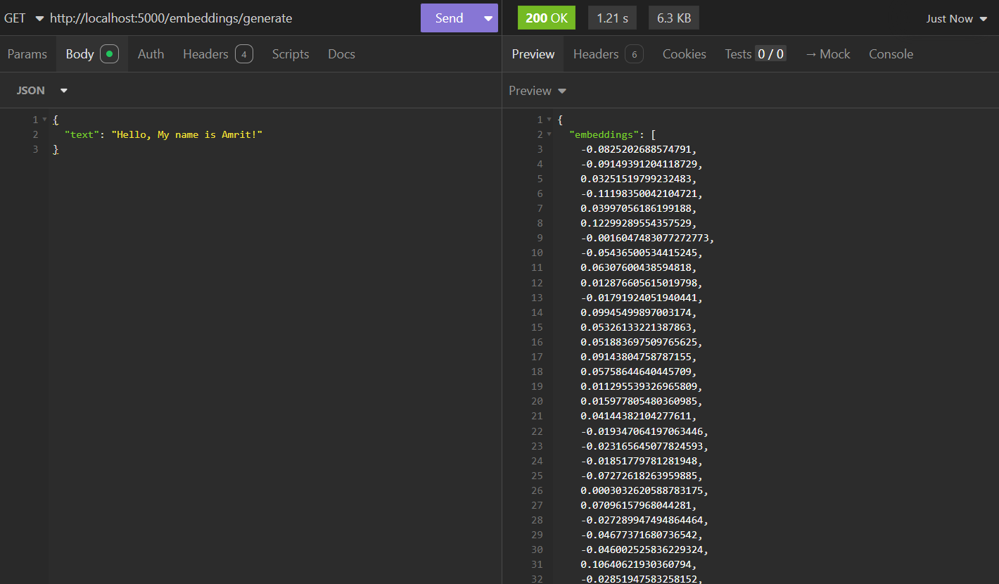
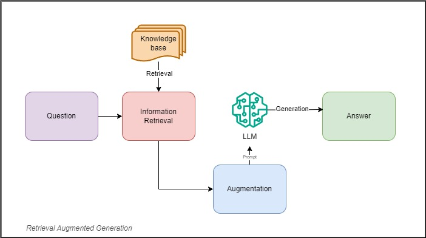
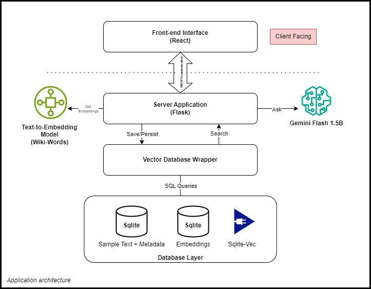
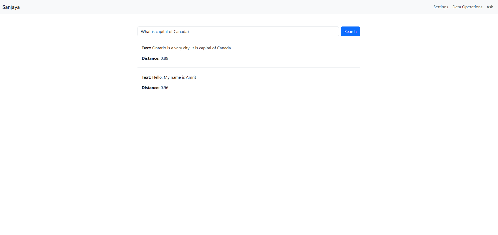
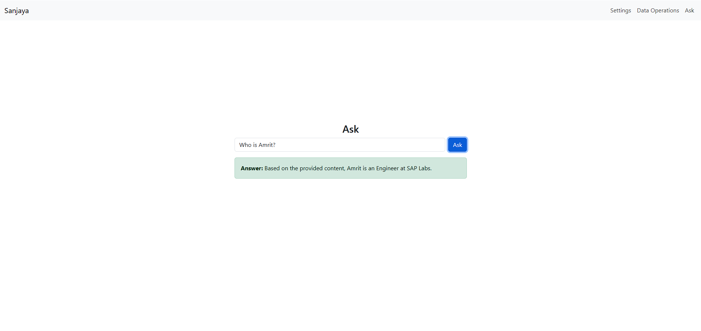
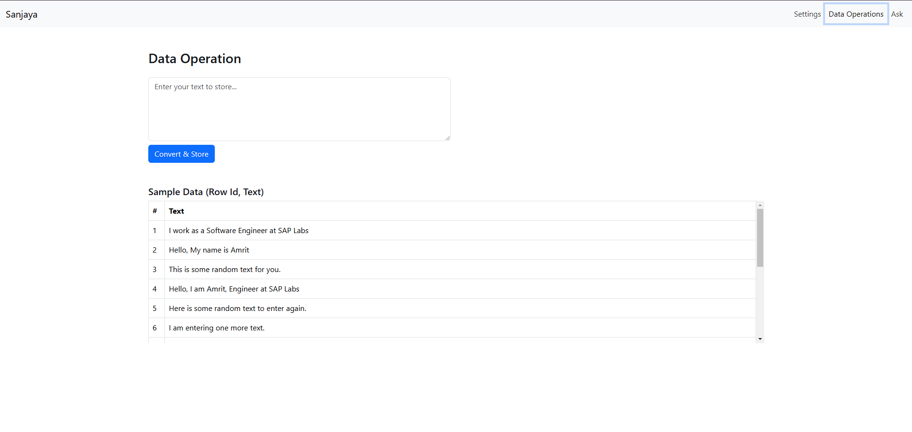
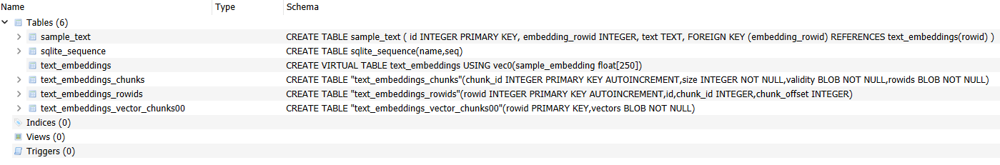
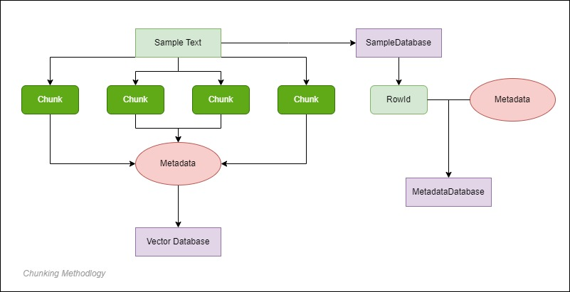
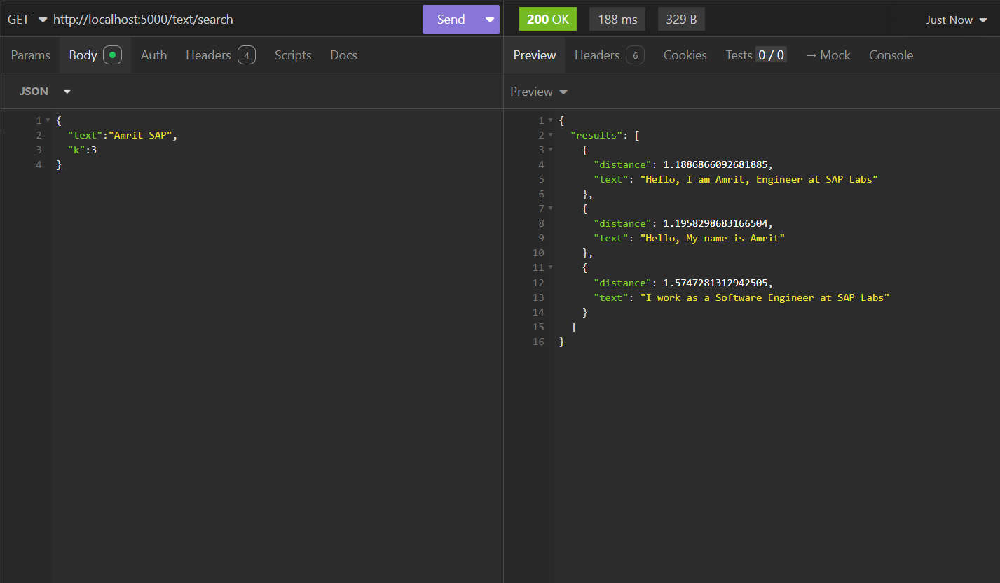

Insights from Building an Embeddings and Retrieval-Augmented Generation App
In this post, I’ll share key insights and findings from building a practical text search application without using frameworks like LangChain or external APIs. I've also extended the app’s functionality to support Retrieval-Augmented Generation (RAG) capabilities using the Gemini Flash 1.5B model.
Understanding Text Retrieval 📚
Text retrieval is the science of extracting relevant information from a dataset in response to a query. This challenge predates modern digital systems—historically, information was retrieved through manually annotated documents.
After World War II, early text retrieval solutions addressed the growing need to index large scientific publications. These systems evolved into what we now know as "search engines." Early systems relied on metadata, like human annotations, to solve specific retrieval problems, distinct from today’s web-based search engines.
In the following decades, methods for automated text retrieval emerged, such as term-frequency and inverse-document-frequency (TF-IDF) algorithms, which match the frequency of terms in the query and corpus. Today, a variant known as BM25 remains widely used in text retrieval.
Vectors and Embeddings ⚛️
A vector is a mathematical representation, essentially a set of numbers, such as [1, 2, 3]. Assigning meaning to these numbers makes them useful. For example, in X, Y, Z dimensions, [1, 2, 3] might represent an object’s location in 3D space.
In text retrieval and natural language processing (NLP), vectors represent data numerically, enabling computers to semantically compare sentence meanings. Machine learning models trained on large datasets can convert text into numerical vectors, known as embeddings.
For instance, the sentence "Hello, My Name is Amrit" could be represented as an embedding vector like [-0.23, 0.78, 1.22, -0.034 ...]. Below, you’ll see an example of a text embedding vector of size 512:

What is Retrieval-Augmented Generation (RAG)? 🖨️

Retrieval-Augmented Generation (RAG) uses three key elements to generate relevant responses with Large Language Models (LLMs) -- Information Retrieval, Knowledge-Augmentation and Text Generation.
Here’s a breakdown of each component:
Information Retrieval
As discussed in the text retrieval section, this involves extracting relevant information from a corpus. Our application is designed to retrieve accurate, relevant data to prevent RAG from returning irrelevant results.
The IR systems can use algorithms that depends on exact query matching in order to retrieve relevant text data. There are many ranking and relevance algorithms which performs to fetch relevant data from the information system. The query and ranking algorithms are then combined with similarity matching algorithms from the realm of Natural Language Processing (NLP) in order to furture tune the search results.
Knowledge Augmentation
Augmentation provides the model with context or additional information to improve responses. Known as "Knowledge Augmentation," this technique supplements LLMs with information they may lack. However, each LLM has a token limit, so our retrieval system must fetch concise, relevant information so that the text-generation process may provide user with accurate response.
Text Generation
Once retrieval and augmentation are complete, the LLM generates a response based on the relevant, augmented data.
RAG is critical for generating responses on topics an LLM isn’t familiar with, serving as an alternative to fine-tuning, which can be time-consuming and costly.
Building My Text Embedding and RAG Application 🚀
There's a common adage in engineering: never reinvent the wheel. I don’t fully subscribe to this. If we don’t understand how the wheel was originally invented, how can we hope to design something as complex as a car? Building from scratch is essential for understanding and innovation.
For this project, several frameworks could have provided out-of-the-box utilities, such as LangChain, Cohere's semantic search library, or OpenAI’s text embedding model. However, using these would have only taught me to work with their APIs, not the underlying principles.

I started by designing a vector database from scratch, using SQLite with the sqlite-vec extension to convert it into a vector database. I created wrappers around SQLite to abstract low-level operations, keeping the implementation clean and manageable.
For text embeddings, I initially used TensorFlow’s Wiki-Words model but later switched to Google’s Universal Sentence Encoder, which generates embeddings of size 512, offering improved accuracy.
The LLM, Gemini Flash 1.5B, is my only external dependency for generating responses. I’m exploring on-device models as this is a field I’d like to delve deeper into.
All these are tied well together with a simple Flask application as a backend server.
The front-end is a React application that communicates with the backend via CORS, with a sleek, simple UI and customizable client-side settings.
This is a common light-weight architecture I follow for creating all of my personal apps, you can read more about the architecture here.
Search Functionality
The search process works as follows:
- The user’s query is converted into an embedding, and the system retrieves the nearest neighbors from the vector database.
- The results are displayed in ascending order of distance from the query embedding, showing the closest matches first.

RAG for Question-Answering
For question-answering:
- The user’s question is converted into an embedding, and the system retrieves relevant embeddings from the vector database.
- The LLM then generates a response based on this context.

Data Operations
The Data Operations page allows users to add new data to the database, expanding available data for search and responses. Users enter text data, which is converted into embeddings and stored in the vector database.

Key Technical Details 🤓
This section dives into some technical aspects of the app, presented in a Q&A format for those interested in the finer points.
How Do Vector Databases Differ from Traditional Databases?
Traditional databases store structured data in various formats. Vector databases, by contrast, are specialized for storing multi-dimensional vectors. They don’t differentiate between data types like images, text, or audio, as all unstructured data is stored in vectors.
Vector databases support operations like cosine similarity, distance, and dot product, unlike CRUD operations typical in traditional databases.
The text-embeddings table below shows how the database stores text embeddings, each associated with a row ID for retrieval. The database also includes chunks and rowId tables for breaking down large texts, though chunking isn’t implemented in this app.

Can Embeddings Be Converted Back to Text?
Embeddings don’t store word-to-number mappings, making it impossible to retrieve exact text from them. Techniques like similarity search (used in this app) can retrieve text with similar meanings, but converting embeddings back to the original text is mathematically impossible and computationally challenging.
How Does Text Length Affect Embeddings?
Embedding length is designed to capture a text’s meaning. Shorter texts provide more focused embeddings, while longer texts can lose detail as the model compresses information.
To address this, chunking breaks down longer texts into smaller, meaningful pieces, storing embeddings for each chunk. This improves search accuracy and can add metadata for better context.
I learned about this technique but didn't implemented it yet, something to look for in the future😉.

How Does the Search Work?
The app uses a K-Nearest Neighbor (KNN) algorithm from sqlite-vec to find the closest matches for a query embedding. Here’s a simplified SQL example:
SELECT rowid, distance FROM text_embeddings WHERE sample_embedding MATCH ? AND k = {k} ORDER BY distance
The KNN algorithm calculates the distance between vectors in a multi-dimensional space (512 in this case) to find the nearest matches. Other algorithms, like cosine similarity, are also common for comparing text similarity in information retrieval. Given below you can see the search performed on the existing corpora of text shown in ascending order of the distance from the query text.

How Does the Prompt Look?
The prompt used in the app to generate responses is available on Google AI Studio.
Source Code ⭐
The full source code, including front-end and back-end, is available on GitHub: Sanjaya.
The embedding models used include:
For instructions on setting up a vector database with SQLite, see the sqlite-vec extension. The LLM model Gemini is available on Google AI Studio.